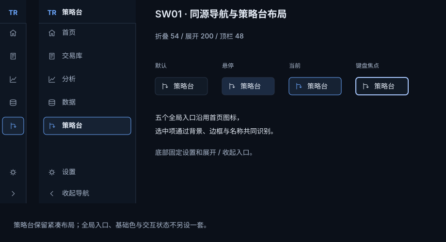
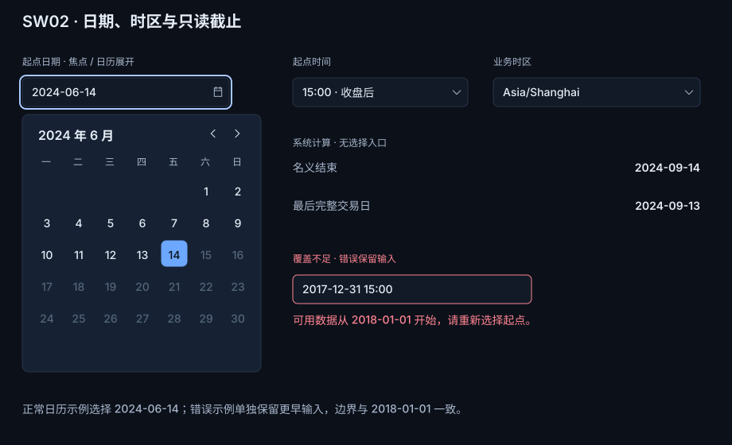
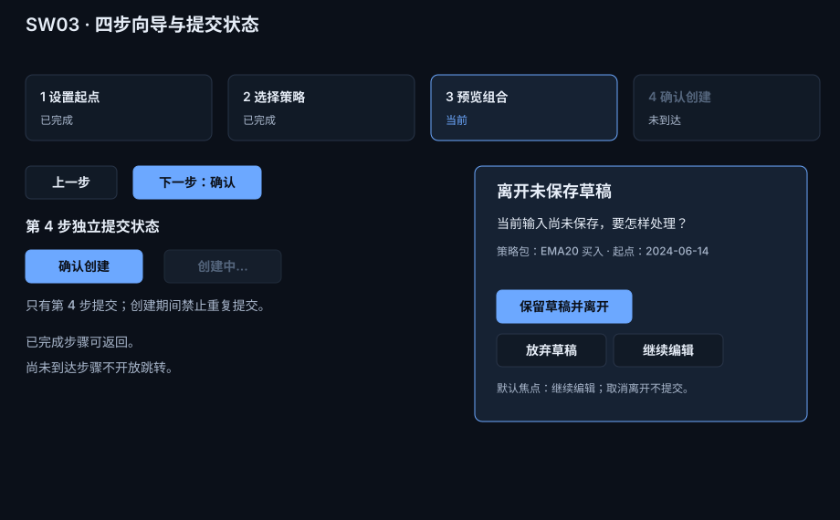
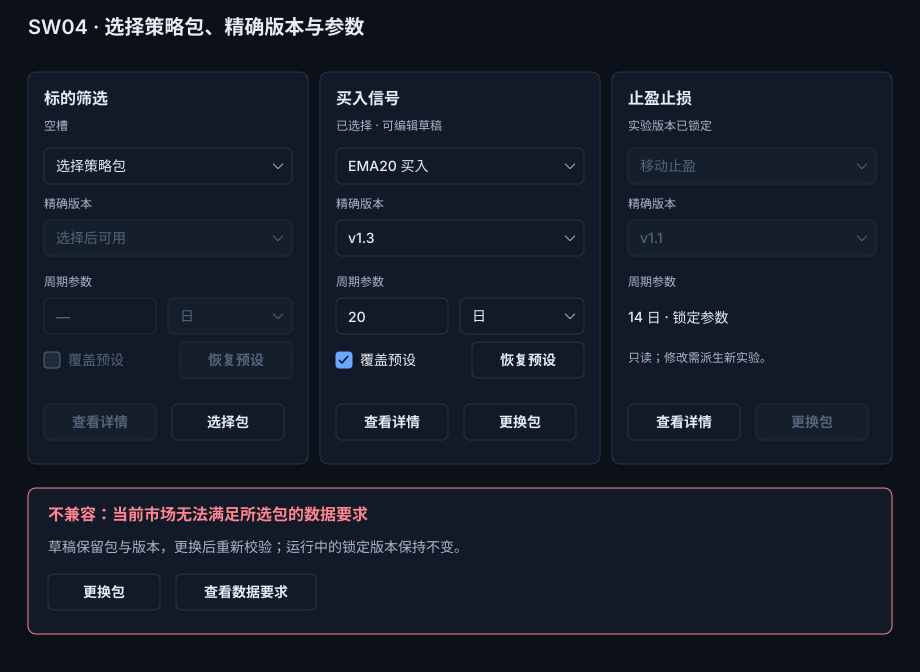
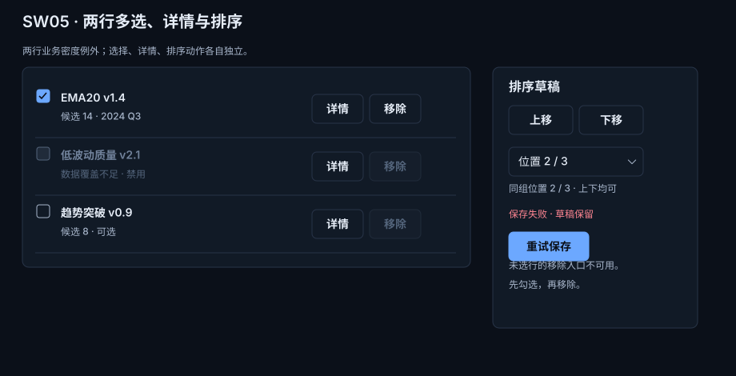
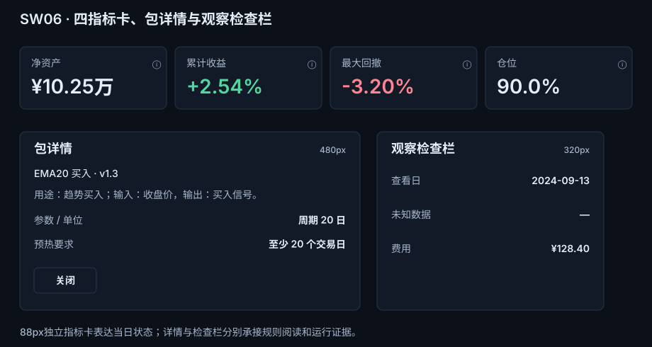
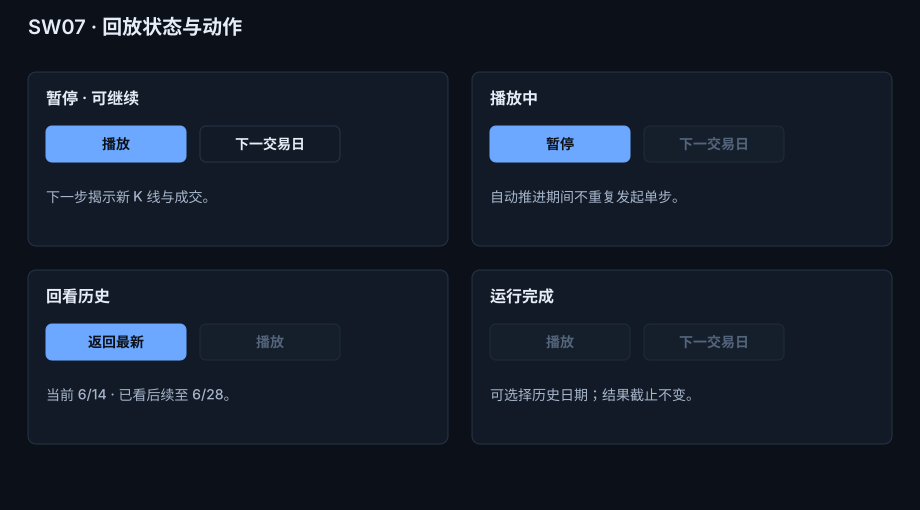
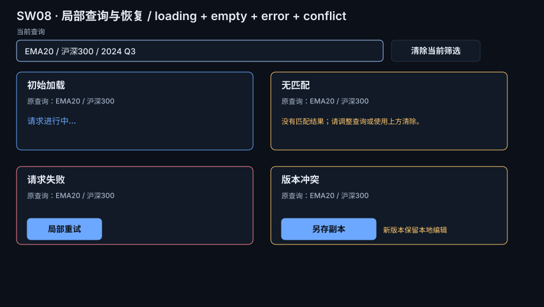

本页以 V2.5 公共控件手册为基础，补充策略台 V1.2 的组合职责与状态。完整业务规则见 V1.2 视觉设计正文；本页不把首页业务规则扩展为全站规则。








| 组件 | 准确尺寸 | 样例状态 | 入口与返回 | 引用页面 |
|---|---|---|---|---|
| SW01 导航 | 折叠 54px、展开 200px、顶栏 48px；入口命中区 36px | 默认、悬停、当前、键盘焦点 | 应用导航进入策略台；收起/展开保留当前入口 | V1.2 ST02，V2.5 公共导航 |
| SW02 日期时间 | 日期本体 260×36px；焦点外框 266×42px；日历面板 300×324px | 日历展开、禁用日期、错误保留值、只读截止 | 日期字段打开日历；Esc 返回日期字段；截止只读，不进入 Tab 编辑序列 | V1.2 ST05 / ST07，V2.5 日期/选择器 |
| SW03 四步向导 | 步骤卡 204×72px；按钮高度 36px；离开确认层 364×280px | 已完成、当前、未到达、提交加载、未保存草稿确认 | 完成步骤可返回；只有第 4 步确认创建提交；继续编辑回到草稿字段 | V1.2 ST05 |
| SW04 三包组装 | 三槽各 280×392px；不兼容提示 864×146px | 空槽、已选、锁定只读、不兼容；参数值/单位/覆盖入口可见 | 选择包、查看详情、换包；详情关闭回原触发器，修改锁定实验需派生新实验 | V1.2 ST03 ASM01–ASM06 |
| SW05 多选排序 | 列表 560×250px；行高 72px；排序栏 256×326px | 已选、禁用、未选、位置 2/3 上下均可、未选不可移除、保存失败 | 勾选后才可移除；详情独立打开；排序草稿可重试保存 | V1.2 ST04 / CMP03 |
| SW06 摘要与详情 | 摘要 88px；包详情 480×252px；检查栏 320×252px | 指标卡标签/主值左齐；表格金额右齐；参数/单位、预热要求、未知值“—” | 从包槽打开说明层；关闭返回触发器；检查栏只读承载当日证据 | V1.2 ASM02、OBS02–OBS04 |
| SW07 回放 | 动作卡 420×174px；动作按钮高度 36px | 暂停、播放、回看、完成禁用 | 播放/单步从图表动作带进入；返回最新只在回看时可用 | V1.2 ST07 |
| SW08 局部恢复 | 查询行 620×36px；状态卡 400×132px | 加载、无匹配、请求失败、版本冲突 | 清除只在原查询行尾；重试/另存只放受影响卡片；空态不重复放清除 | V1.2 ST10 ERR01–ERR08 |
| 扩展 | 触发 / 反馈 | 退出 / 键盘 | 失败恢复与适用/N/A |
|---|---|---|---|
| SW01 导航 | 点击入口切换页面；选中使用表面与线图标 | Tab 经过五入口；折叠保留 36px 命中区 | 页面加载失败保留当前入口；不适用 empty button 状态 |
| SW02 日期时间 | 日历/选择器展开；错误外置且保留原值 | Esc 关闭并回焦点；Tab 到日期、日历和时区；只读截止不进入编辑 Tab 序列 | 范围不足说明原因；禁用日期不进入 Tab |
| SW03 四步向导 | 完成步骤可返回；当前步骤突出；确认显示 loading | Enter 仅在第 4 步提交一次；离开草稿先选保留/放弃/继续编辑 | 校验失败保留草稿；未到达步骤 N/A 不可进入 |
| SW04 三包组装 | 选择/换包/版本与参数覆盖均有独立控件 | 详情关闭回触发器；锁定版本仍可阅读 | 不兼容保留已选值并给换包入口；空槽显示选择器 |
| SW05 多选/排序 | Checkbox 选择与详情分开；排序上移/下移有边界 | Space 切换勾选；位置选择器保留 Tab 顺序 | 保存失败保留排序草稿；禁用行说明原因 |
| SW06 摘要/详情/检查栏 | 88px 指标、480px 详情、320px 检查栏各自展开 | 详情滚动；关闭恢复焦点；指标卡左齐、表格金额右齐 | 未知显示 —；局部错误不挤占主图；指标无交互时 N/A |
| SW07 回放控制 | 播放/暂停/下一日改变真实可见 K 线；末尾禁用 | Space 播放暂停；输入和 IME 期间快捷键暂停 | 推进失败保留最后完整步；回看记录已看后续来源 |
| SW08 局部恢复 | 加载、无匹配、失败、冲突只影响所属区域 | Esc 关闭说明；局部重试不重复提交 | 输入、日期、身份完整保留；无真实动作的状态不画按钮 |
文本输入和中文输入法组词期间，回放快捷键暂停；回放推进必须让目标 K 线或成交标记进入真实主图。公共扩展不改变 V2.5 的 12 类 / 96 基础状态统计。